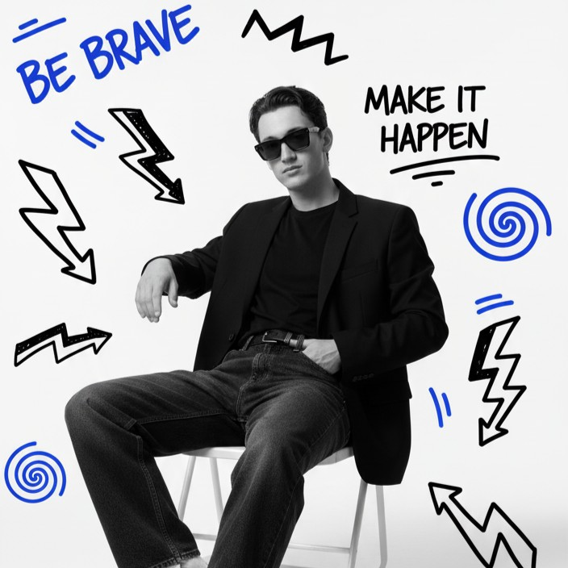

WebDesigner et Intégrateur
Étudiant en troisième année de Licence CRRW à l'École d'Ingénieurs en Sciences Industrielles et Numérique.
Actuellement à la recherche d'un stage, en intégration web ou communication, dans le but d'acquérir une expérience pratique à la fin de ma formation et étendre mes connaissances techniques.

Contact
- 20 ans
- lennygadroy@gmail.com
- 06 52 51 49 19
- Charleville-Mézières (08000)
- Reims (51100)
- Permis B
- Véhiculé
- linkedin.com/in/LennyGadroy
Hard Skills
Intégration
- HTML 5
- CSS 3
- JavaScript
UX / UI Design
- Figma
- Suite Adobe
Communication
- Canva
Réseaux Sociaux
- CapCut
- SCRL
Gestion de projet
- Notion
- Trello
- Slack
Soft Skills
- Dynamique
- Rigueur et Organisation
- Autonomie
- Dévouement
Langues
Français
langue maternelle
Anglais
Niveau : B1
Centres d'intérêt
Sports
- Musculation
- Cyclisme
- Pétanque
Automobile
- Sports mécaniques : F1, MotoGP
- Industrie automobile
Musiques
- Styles variés : de 1980 à 2025
- Concerts et Festivals
Expériences Professionnelles
Webdesigner UI / UX
Yligen
de juillet 2025 à septembre 2025- Conception d'interfaces utilisateur (UI) : Élaboration de l'arborescence, des maquettes (wireframes) et des prototypes fonctionnels pour garantir une cohérence graphique et ergonomique sur tous les supports.
- Optimisation de l'expérience utilisateur (UX) : Réalisation de tests utilisateurs et d'analyses pour optimiser les parcours clients, réduire les frictions et améliorer l'accessibilité du site ou de l'application.
- Veille technologique et Création Digitale : Suivi des tendances graphiques et technologiques pour proposer des designs innovants, et collaboration avec les développeurs pour assurer l'intégration technique des maquettes.
Assistant en Optimisation Clientèle et Stratégie de Vente
Citroën - Les Garages Français
De janvier 2024 à décembre 2024- Mise en œuvre d’une stratégie de prospection omnicanale pour identifier et qualifier de nouveaux leads.
- Négociation des conditions commerciales lors des ventes, auprès de clients BtoC et BtoB.
- Élaboration et conception d’une stratégie de communication, dans le but d’optimiser les plateformes digitales de l'entreprise.
Coach et Formateur aux jeux d'Échecs
Mairie de Cormontreuil
D'août 2023 à août 2024- Conception et gestion de projet : Organisation et lancement d'un stage d'initiation aux échecs en partenariat avec la Mairie, incluant la planification logistique et la promotion locale.
- Encadrement et pédagogie : Création et aménagement d'un club d'échecs en libre accès pour un public débutant et intermédiaire.
- Autonomie et initiative : Gestion complète de l'activité, de la prospection (recherche d’élèves/participants) à l'adaptation des programmes pédagogiques.
Passeport Citoyen
Mairie de Cormontreuil
Depuis février 2023Engagement bénévole dans le cadre des événements municipaux, démontrant un fort sens de l'initiative et des responsabilités.
- Contribution à la réussite des manifestations en assurant la mise en place des infrastructures et l'accueil du public.
- Adaptabilité et polyvalence en intervenant sur des missions variées (installation, tenue de stand, service).
- Développement du sens du collectif et du travail en équipe.
Diplômes et Formations
Licence Conception Rédaction Réalisation Webdesign
École d'Ingénieurs, Charleville-Mézières (08000)
Depuis septembre 2025Formation axée sur le développement de projets numériques, visant à développer des compétences techniques et transversales pour les métiers du numérique.
BTS Négociation et Digitalisation de la Relation Client (NDRC)
Lycée Jean-Baptiste Colbert, Reims (51100)
De septembre 2023 à juillet 2025Diplôme obtenu avec la mention Bien après deux années de formation, j'ai acquis une solide base en commercialisation :
- Développement Commercial : Prospection et négociation client, avec une forte capacité à identifier de nouvelles opportunités de marché et à fidéliser la clientèle existante.
- Stratégie et Création Digitale : Conception de contenus pour les réseaux sociaux et de sites internet, et animation de communauté, visant à renforcer la visibilité de la marque et l'engagement de la communauté.
Bac Général
Lycée Hugues Libergier, Reims (51100)
De septembre 2020 à juillet 2023Diplôme obtenu avec les spécialités Mathématiques et S.E.S
- Analyse Économique et Sociale (SES) : Compréhension des enjeux économiques contemporains (fonctionnement des marchés, financement de l'entreprise) et analyse des dynamiques sociales, favorisant une vision globale de l'environnement de l'entreprise.
- Rigueur et Logique Mathématique : Développement de l'esprit de synthèse et de la capacité d'abstraction par la résolution de problèmes complexes, apportant une méthodologie structurée et rigoureuse.